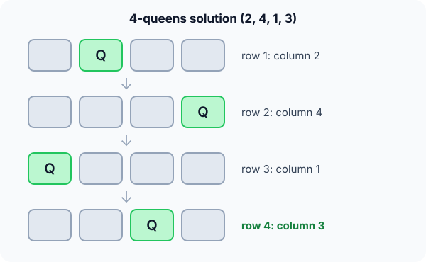

Prerequisites
- Recursion.
- DFS: backtracking is DFS on a tree of choices.
- Arrays.
The analogy
Everyday analogy
Think of walking through a maze: at each junction you pick a path; when you hit a dead end, you walk back to the last junction and try the next path.
Backtracking does that with choices. It builds a solution one decision at a time and, the moment a rule is broken, undoes the last decision and tries another.
How it works
The three moves: choose an option for the next decision, explore recursively, and un-choose it when you come back, so the next option starts from a clean state.
Start with 4 queens by hand
One queen per row. Try columns 1 to 4 in order; a column is safe if no earlier queen shares its column or a diagonal. Predict, then open "Check".
Example: predict before you read
Step 1. Row 1: column 1. Row 2: predict the first safe column.
Check
Column 3. Column 1 is the same column, and column 2 is on a diagonal of (1, 1).
Step 2. Cover the next line and guess: with queens at (1, 1) and (2, 3), is any column safe in row 3?
Check
No: columns 1 and 3 are taken, 2 and 4 are on diagonals of (2, 3). Dead end, so backtrack: move row 2's queen to column 4.
Step 3. Keep going. Predict the first full solution.
Check
Row 1 at column 1 eventually fails everywhere, so row 1 moves to column 2. Then rows 2, 3, 4 take columns 4, 1, 3: solution (2, 4, 1, 3).

Quick recall: Before reading further, cover the text above and say out loud: when exactly does backtracking undo a choice?
Check your answer
As soon as the current partial solution can't be extended: no option for the next decision is valid.
Finish the picture: why pruning matters
Compare blind enumeration with backtracking on 4 queens.
- Blind enumeration. Predict how many complete placements (one queen per row) you'd check.
Check
$4^4 = 256$, testing each full board only at the end.
- Backtracking. Predict why it checks far fewer.
Check
A clash is detected as soon as it happens, so whole subtrees are cut: after (1, 1), (2, 2) is rejected immediately, along with the 16 boards that start that way.
Quick recall: Without scrolling up, say out loud: what is the second 4-queens solution?
Check your answer
The mirror image: columns 3, 1, 4, 2.
The rule in plain words
Build the solution one decision at a time (here: one row at a time). For each option, check the constraints against the decisions so far.
If the option is valid, take it and recurse; when the recursion returns, undo it and try the next option. If no option works, return to let the previous decision change.
Quick recall: Before you read the code, write the backtracking loop in your own words. Then check below.
Check your answer
If every row has a queen, count a solution. Otherwise, for each column in the current row: if it's safe, place the queen, solve the next row, and then move on to the next column (undoing the placement).
The code
Read this code after you have placed the queens by hand. It will make more sense.
int safe(int col[], int row, int c) { /* can a queen go at (row, c)? */
for (int r = 0; r < row; r++)
if (col[r] == c || col[r] - c == row - r || c - col[r] == row - r)
return 0; /* same column or diagonal */
return 1;
}int solve(int col[], int row, int n) { /* returns the number of solutions */
if (row == n) return 1; /* all queens placed */
int count = 0;
for (int c = 0; c < n; c++)
if (safe(col, row, c)) {
col[row] = c; /* choose */
count += solve(col, row + 1, n); /* explore */
} /* next c overwrites col[row]: un-choose */
return count;
}Definition
What you just did, in one line: backtracking builds candidate solutions one choice at a time and abandons a partial solution (backtracks) as soon as it cannot lead to a valid complete solution.
graph TD
R["empty board"] --> A["row 1: col 1"]
R --> B["row 1: col 2"]
A --> A3["row 2: col 3"]
A --> A4["row 2: col 4"]
A3 --> X1["row 3: no safe column ✗"]
B --> B4["row 2: col 4"]
B4 --> B41["row 3: col 1"]
B41 --> S["row 4: col 3 ✓"]
How fast is it?
Quick recall: Before looking at the formula, predict: how many ways are there to put one queen in each row and column of an $n \times n$ board?
Check your answer
$n!$, since each row picks a different column. Pruning by diagonals cuts this down a lot.
With one queen per row and per column, the full search space is $n!$ placements, and pruning explores only a fraction of it:
$$n^n \;\gg\; n! \;\gg\; \text{nodes actually explored}$$For $n = 8$: $8^8 \approx 16.8$ million boards, $8! = 40{,}320$ permutations, and backtracking visits about 2,000 partial boards to find all 92 solutions. The worst case is still exponential.
| Problem | Search space | Pruning rule |
|---|---|---|
| $n$-queens | $n!$ permutations | Column or diagonal clash |
| Sudoku | $9^{81}$ fillings | Row, column or box clash |
| Subset sum | $2^n$ subsets | Running sum exceeds the target |
| Graph colouring | $k^V$ colourings | Neighbour has the same colour |
Warning
Backtracking is still exponential in the worst case. Pruning only helps if it cuts early; checking constraints only on complete solutions is plain brute force.
Exam tip
Draw the decision tree, mark pruned branches with ✗, and name the three moves (choose, explore, un-choose). That is usually what the question wants.
Common mistakes
- Forgetting to undo a choice (when state is shared), so later branches see stale decisions.
- Checking constraints only at the end instead of at each step, losing all the pruning.
- Missing the diagonal test: two queens attack diagonally when |row difference| = |column difference|.
Try it yourself
Exercise 1 (warm-up)
Using backtracking, find a subset of {3, 5, 6, 7} that sums to 15. Prune any branch whose sum exceeds 15.
Hint
Decide for each number in order: take it or leave it.
Answer
Take 3, 5 and 6 (sum 14); taking 7 too gives 21 > 15, pruned, and skipping 7 ends at 14, a dead end. Backtrack: skip 6, take 7: 3 + 5 + 7 = 15.
Exercise 2 (a bit harder)
How many solutions does the 4-queens problem have, and how does the code above count them without printing? Write your answer down before you open it.
Show answer
2 solutions: (2, 4, 1, 3) and (3, 1, 4, 2). solve returns 1 whenever all rows are filled and adds up the counts from every safe choice, so the top call returns 2.
Did you know?
Did you know?
The 8-queens puzzle was posed by a chess composer in 1848; Gauss worked on it. It has 92 solutions, 12 of them truly different once rotations and reflections are removed.
Sudoku solvers, crossword fillers and constraint solvers used in timetabling and chip design are all built on backtracking with clever pruning.
Key points to remember
If you remember one thing from each line, remember the because.
- Backtracking is DFS over choices because it extends one partial solution as deep as possible before trying alternatives.
- Pruning saves time because one early clash removes every solution that would extend it.
- Choices must be undone because the next option must start from the same state as the first.
- The worst case is exponential because pruning can't always cut enough of the search space.
- The diagonal test uses |Δrow| = |Δcolumn| because that's exactly when two squares share a diagonal.
Self-check questions
Answer these in order, out loud. They follow the page, so your answers become the script of your video.
- How is backtracking like walking through a maze?
Sample answer
At each junction you choose a path; at a dead end you walk back to the last junction and try the next path.
- Walk through the start of 4-queens: rows 1 and 2, and the first dead end.
Sample answer
Row 1 takes column 1, row 2 takes column 3 (the first safe one); row 3 then has no safe column, so we backtrack and move row 2 to column 4.
- Why does
safecomparecol[r] - candc - col[r]withrow - r?A good answer describes a diagonal.
Sample answer
Two squares are on the same diagonal when the column difference equals the row difference in either direction; the two comparisons cover both diagonals.
- So what is backtracking, in one sentence?
Sample answer
Building a solution choice by choice and abandoning (undoing) a partial solution as soon as it breaks a constraint.
- Why is backtracking much faster than trying every full board?
A good answer mentions whole subtrees.
Sample answer
A clash found after two queens rules out every board that starts with those two queens, so huge parts of the search space are never visited.
- What is the worst-case cost of backtracking?
Sample answer
Still exponential, bounded by the size of the search space (such as $n!$ for $n$-queens); pruning usually makes it far smaller in practice.
- How does the code "un-choose" a queen?
Sample answer
It overwrites
col[row]with the next column in the loop, and later rows only read entries for rows above them, so the old value never interferes. - If you had to teach this to a friend in 2 minutes, what would you leave out, and why?
Sample answer
I'd leave out the search-space numbers and subset sum. I'd keep the maze analogy, the 4-queens trace with one dead end, and "choose, explore, un-choose; prune early".
External resources
- GeeksforGeeks: Backtracking: n-queens, sudoku, subset sum and more.
- Wikipedia: Backtracking: the general method and examples.
- Wikipedia: Eight queens puzzle: history and solution counts.
Videos
- YouTube search: n-queens backtracking: pick a walkthrough with the board.